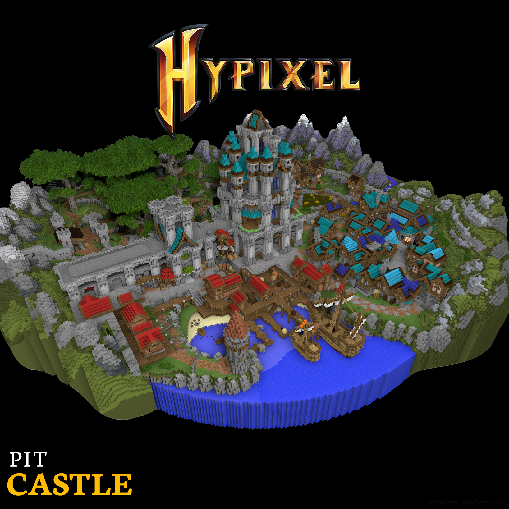

|
The Pit 0.4.1 - Castle Map & Dark Pants
|
|  |
| A screenshot of the new Castle map. |
| Release Date | May 22nd, 2018 |
Forums Approval*Forums approval is based on the number of positive reactions on the update's forum post divided by the number of total reactions.
Reactions only count if they were added in the first month of the post being up. | 97% |
| Forums Author | Minikloon |
| ← Events Extravaganza —
Genesis Map
→
|
The Pit 0.4.1 was the ninth major version of the Hypixel Pit. It introduced the Castle map and its related activities, the Heresy renown upgrade and the day-night cycle, Dark Pants, and various balance changes, along with the Raw Numbers renown upgrade.
The Castle Map was one of the major introductions in the update, boasting a large number of non-combat activities for players to partake in, most notably activities associated with the King's Quest and the Sewers area. A list of these activities and the rewards for participating in them can be found on their respective pages.
The update also introduced the Heresy renown upgrade, allowing players to complete Night Quests at nightfall to receive Chunks of Vile, which could be used to craft Dark Pants at night. Crafting Dark Pants cost 2 renown and 4–2 Chunk of Vile depending on the user's Heresy level. Notably, all Tier I enchanted Dark Pants were enchanted with Somber, which nullified the effects of mystic enchantments used on the user, but also prevented the user from using non-dark enchantments. All Dark enchantments obtained at Tier II came with a powerful effect but some drawback. At the time, Dark Pants were as strong as chainmail leggings, and were typically enchanted with "way higher lives" (usually 10-40 at Tier I, and 30–75 at Tier II). A list of Dark enchantments can be found on the Dark Pants page.
Additionally, the Raw Numbers renown upgrade was added in this update. It allowed players to view the exact damage they'd dealt to a target in the action bar (in terms of health, not hearts). It could be purchased at Prestige XIII for 40 renown.
The trading limit was also increased from (8 → 12) daily trades and (30,000 → 50,000) gold.
Balance changes:
- (↑) The Beat the Spammers enchantment's damage was buffed at lower tiers.
- I: Deal (+8% → +10%) damage to players holding a bow
- II: Deal (+15% → +25%) damage to players holding a bow
- III: Deal +40% damage to players holding a bow
- (↑) The Bounty Reaper enchantment's damage was buffed.
- I: Deal (+5% → +7%) damage to players with bounties
- II: Deal (+10% → +15%) damage to players with bounties
- III: Deal (+20% → +25%) damage to players with bounties
- (↑) The Cricket enchantment now also grants permanent Regeneration I while standing on grass at all tiers.
- (↑) The Pebble enchantment now also grants 1♥︎ absorption per ingot collected at tier III.
- (↑) The Executioner enchantment's activation trigger was made "more consistent and way baller".
- (↑) The Assassin enchantment's cooldown was reduced at all tiers.
- I: (15 → 10) seconds
- II: (10 → 5) seconds
- III: (5 → 3) seconds
- (↑) The True Shot enchantment's damage conversion was increased at all tiers.
- I: (15% + 0♥︎ → 25% + 0♥︎) true damage
- II: (25% + 0♥︎ → 35% + 0.25♥︎) true damage
- III: (35% + 0.25♥︎ → 45% + 0.5♥︎) true damage
- (↑) Creepers from the Martyrdom enchantment had their damage increased by an unknown amount at all tiers.
- (↑) Golden Heads now grant (2♥︎ → 3♥︎) absorption.
- (~) The Duelist enchantment now heals the user on activation instead of granting Speed.
- I: (Speed I (0:02) → 0.5♥︎ heal) when blocking two hits from the same player
- II: (Speed I (0:04) → 1♥︎ heal) when blocking two hits from the same player
- III: (Speed I (0:05) → 1.5♥︎ heal) when blocking two hits from the same player
- (~) The Phoenix enchantment can now only be used once per life. Tier III now grants a (+15% → +30%) damage boost.
- (~) The Healer enchantment now heals the target much more than the user at all tiers.
- I: (1♥︎ → 0.5♥︎) self heal, (1♥︎ → 2♥︎) target heal
- II: (2♥︎ → 0.75♥︎) self heal, (2♥︎ → 4♥︎) target heal
- III: (3♥︎ → 1♥︎) self heal, (3♥︎ → 5♥︎) target heal
- (~) The Soup perk's effects were reworked.
- Speed I (0:04) stacking up to 1:00 → Speed I (0:07)
- Regeneration I (0:05) → Regeneration I (0:07)
- 1♥︎ absorption → 1.5♥︎ heal and 1♥︎ absorption
- +12% + 5% damage stacking up to +52% on next melee hit → +15% damage on next melee hit
- (↓) The Last Stand enchantment's Resistance duration was reduced by 1 second at all tiers, and was given a 10 second cooldown at all tiers.
- I: Resistance I ((0:04 → 0:03)) when reaching 3♥︎ left
- II: Resistance II ((0:05 → 0:04)) when reaching 3♥︎ left
- III: Resistance III ((0:05 → 0:04)) when reaching 3♥︎ left
- (↓) The Combo: Stun enchantment's duration was reduced by 1 second at all tiers, and players stunned cannot be stunned again for 10 seconds.
- I: 0.5s stun
- II: (1.0s → 0.75s) stun
- III: (1.5s → 1.0s) stun
- (↓) The What doesn't kill you enchantment was given a 3 second cooldown at all tiers.
- (↓) The Divine Miracle enchantment's activation rate was reduced.[bug]The forums article states that the chance was reduced by "5% per tier", and that Divine Miracle III's activation rate was reduced from 80% to 65%, but the values in-game were as follows.
- I: (30% → 20%) chance to save mystic lives on death.
- II: (50% → 40%) chance to save mystic lives on death.
- III: (80% → 60%) chance to save mystic lives on death.
- (↓) The Mega Longbow enchantment's Jump Boost duration was reduced from (3 → 2) seconds.[bug]The forums article states that the duration was reduced to 1 second, but the value in-game was 2 seconds.
- (↓) The Devil Chicks enchantment now damages the user.
- (↓) Instaboom TNT from the Instaboom enchantment now damages the user by an increasing amount following consecutive uses and is capped at 6 held at tier III. [bug]The forums article states that the cap was 5 held, but the value in-game was 6.
- (↓) TNT from the TNT enchantment now deals less damage, only gives 1 TNT on kill, and is capped at 7 held.[bug]The forums article states that the cap was 9 held, but the value in-game was 7.
- (↓) The Marathon perk's damage boost was reduced from (+20% → +15%) and its damage reduction was reduced from (-20% → -15%).
- (↓) The Kung Fu Knowledge perk's base damage was reduced from (4.05♥︎ → 3.55♥︎).